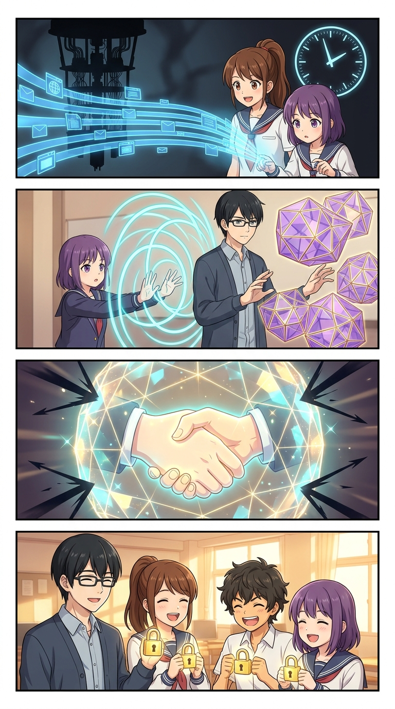
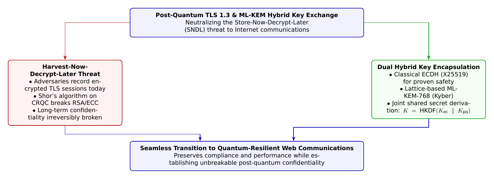

🎨 4コマ漫画挿絵（文字なし）
AI高解像度生成
▲ 【挿絵】青葉台高校 情報科学部＆帝都科学大学サイバーディフェンス・ラボでの実践シーン
📖 小説本文
### 1. タイムカプセルに封じられた暗号文
「悠真先輩、世界中の海底光ケーブルやバックボーンルータで、テラバイト規模の暗号化HTTPSトラフィックが国家規模の組織によって無差別に蓄積されているというインテリジェンス・レポートを読みました……」 白石結衣が、海外のサイバーセキュリティ機関（CISA/NCSC）の共同勧告をタブレットに表示した。
「いわゆる『Store-Now-Decrypt-Later（SNDL: 今盗聴し、後で解読せよ）』攻撃だな」 悠真が神妙に頷いた。
葵が疑問を口にする。 「でも、今のWebブラウザとサーバーの通信はすべてTLS 1.3で暗号化されていますよね？ 現代のスーパーコンピュータを何万年稼働させても、楕円曲線暗号（ECDHE）の秘密鍵は逆算できないはずでは……？」
「『今は』解読できなくても、10年後や15年後に実用的な誤り耐性型汎用量子コンピュータ（CRQC: Cryptographically Relevant Quantum Computer）が完成したらどうなる？」 結衣が静かに問いかけた。 「ショアのアルゴリズム（Shor's Algorithm）が量子プロセッサ上で走れば、離散対数問題や素因数分解問題に依存するRSAや楕円曲線暗号は、多項式時間 $\mathcal{O}((\log N)^3)$ で瞬時に解読されてしまう。 今蓄積された医療記録、政府の外交公電、企業の特許データは、未来の量子マシンによって過去に遡ってすべて暴かれてしまうのよ」
---
### 2. 数学の迷宮：高次元格子暗号（ML-KEM）
「過去の遺産を量子解読から守り、未来の通信を今日この瞬間から保護するために誕生したのが、NIST（米国国立標準技術研究所）が2024年にFIPS 203として正式標準化した耐量子鍵カプセル化メカニズム——『ML-KEM（Module Lattice-based Key Encapsulation Mechanism、旧CRYSTALS-Kyber）』だ」 悠真がホワイトボードに幾何学的な格子ベクトルの概念を描いた。
「ML-KEMの安全性は、高次元ユークリッド空間における格子上の『学習エラー付きモジュール問題（M-LWE: Module Learning With Errors）』の困難性に立脚している。 量子コンピュータが得意とする周期性の探索（フーリエ変換）を用いても、何千次元もの格子点に微小なランダムノイズ（誤差）が重畳されたベクトルから最短ベクトルを見つけ出すことは、量子アルゴリズムを以てしても指数時間の計算量を要することが数学的に証明されている」
「なるほど！ どんなに量子ビット数が増えても、格子の高次元迷路は解けないわけですね！」 蓮が感銘を受けたように頷いた。
---
### 3. 架け橋：X25519MLKEM768ハイブリッド鍵交換
「しかし、PQCの数学的実装はまだ歴史が浅く、アルゴリズムの実装脆弱性や未知の数学的ショートカットが発見されるリスクがゼロとは言い切れない」 結衣が慎重に指摘した。
「そこで、Web標準化団体IETFとブラウザベンダーがTLS 1.3に採用したのが『ハイブリッド鍵交換（Hybrid Key Exchange）』だ」 悠真がTLS 1.3のClientHelloとServerHelloのパケットフォーマットを提示した。
$$\text{Shared Secret } K = \text{HKDF-Extract}\left(0, K_{\text{X25519}} \parallel K_{\text{ML-KEM-768}}\right)$$
「クライアントとサーバーは、従来の古典楕円曲線暗号（X25519）と格子暗号（ML-KEM-768）の2つの公開鍵を同時に送受信する。 そして、古典の共有鍵 $K_{\text{X25519}}$ と格子の共有鍵 $K_{\text{ML-KEM-768}}$ の両方を連結してHKDF（HMACベース鍵導出関数）に通す。 これにより、仮に将来ML-KEMに未知の弱点が見つかっても古典暗号が破られない限り安全であり、逆に量子コンピュータが完成しても格子暗号が破られない限り安全という、『二重の完全防御』が成立するんだ」
---
### 4. 未来へ結ばれるハンドシェイク
蓮が最新のOpenSSL 3.4と自作テストブラウザを用いて、研究室のWebサーバーへ接続を試みた。 「TLS 1.3ハンドシェイク開始……NamedGroup `X25519MLKEM768`（ID: `0x11ec`）をネゴシエーション！ 暗号スイート `TLS_AES_256_GCM_SHA384` 確立！ ハンドシェイク所要時間、わずか18ミリ秒です！」
葵がブラウザのアドレスバーに輝く緑色の鍵アイコンをクリックした。 「接続の詳細に『Post-Quantum Hybrid Key Exchange Active』って表示されたわ！ 古典の軽快さと量子の堅牢性が、何のエラーもなく滑らかに融合している！」
窓の外には、無数の情報が行き交う横浜の街並みが広がっている。 「暗号の歴史は、破る者と守る者の果てしない対話だ。でも私たちが正しい数学を選び続ける限り、通信の自由とプライバシーは決して奪われない」 悠真の言葉に、3人が力強く頷いた。
確固たる数理の格子に守られた新時代の握手（ハンドシェイク）が、遥かな未来へと続くサイバー空間を力強く照らし出していた。
📊 セキュリティ構造図解 (TikZ LuaLaTeX生成)
国家安全基準・工学図解
▲ 【技術構造図】IPAデジタルスキル標準・国際規格に準拠した仕組みのモデル化